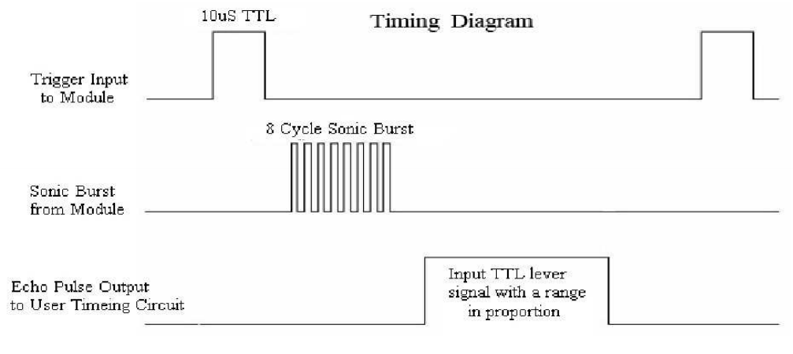

Bemerkung
Hallo und willkommen in der SunFounder Raspberry Pi & Arduino & ESP32 Enthusiasten-Gemeinschaft auf Facebook! Tauchen Sie tiefer ein in die Welt von Raspberry Pi, Arduino und ESP32 mit anderen Enthusiasten.
Warum beitreten?
Expertenunterstützung: Lösen Sie Nachverkaufsprobleme und technische Herausforderungen mit Hilfe unserer Gemeinschaft und unseres Teams.
Lernen & Teilen: Tauschen Sie Tipps und Anleitungen aus, um Ihre Fähigkeiten zu verbessern.
Exklusive Vorschauen: Erhalten Sie frühzeitigen Zugang zu neuen Produktankündigungen und exklusiven Einblicken.
Spezialrabatte: Genießen Sie exklusive Rabatte auf unsere neuesten Produkte.
Festliche Aktionen und Gewinnspiele: Nehmen Sie an Gewinnspielen und Feiertagsaktionen teil.
üëâ Sind Sie bereit, mit uns zu erkunden und zu erschaffen? Klicken Sie auf [hier] und treten Sie heute bei!
2.2.5 Ultraschallsensormodul
Einführung
Der Ultraschallsensor verwendet Ultraschall, um Objekte genau zu erfassen und die Entfernungen zu messen. Es sendet Ultraschallwellen aus und wandelt sie in elektronische Signale um.
Komponenten

Prinzip
Ultraschall
Das Ultraschall-Entfernungsmessmodul bietet eine berührungslose Messfunktion von 2cm bis 400 cm, und die Entfernungsgenauigkeit kann bis zu 3mm betragen. Es kann sicherstellen, dass das Signal innerhalb von 5m stabil ist und das Signal nach 5m allmählich geschwächt wird, bis die 7m-Position verschwindet.
Das Modul enthält Ultraschallsender, Empfänger und Steuerschaltung. Die Grundprinzipien sind wie folgt:
(1)Use an IO flip-flop to process a high level signal of at least 10us.
(2)The module automatically sends eight 40khz and detects if there is a pulse signal return.
(3)If the signal returns, passing the high level, the high output IO duration is the time from the transmission of the ultrasonic wave to the return of it. Here, test distance = (high time x sound speed (340 m / s) / 2.


Das Zeitdiagramm ist unten dargestellt. Sie müssen nur einen kurzen 10us-Impuls für den Triggereingang liefern, um die Entfernungsmessung zu starten. Anschließend sendet das Modul einen Ultraschallstoß von 8 Zyklen bei 40 kHz und erhöht sein Echo. Sie können den Bereich über das Zeitintervall zwischen dem Senden des Triggersignals und dem Empfangen des Echosignals berechnen.
Formel: us / 58 = Zentimeter oder us / 148 = Zoll; oder: der Bereich = hohe Niveauzeit * Geschwindigkeit (340M/S) / 2; Es wird empfohlen, einen Messzyklus über 60ms zu verwenden, um Signalkollisionen des Triggersignals und des Echosignals zu vermeiden.
{kind=link}
Schematische Darstellung

Experimentelle Verfahren
Schritt 1: Bauen Sie die Schaltung auf.

Für Benutzer in C-Sprache
Schritt 2: Gehen Sie zum Ordner der Kode.
cd ~/davinci-kit-for-raspberry-pi/c/2.2.5/
Schritt 3: Kompilieren Sie die Kode.
gcc 2.2.5_Ultrasonic.c -lwiringPi
Schritt 4: Führen Sie die ausführbare Datei aus.
sudo ./a.out
Wenn die Kode ausgeführt wird, erkennt das Ultraschallsensormodul den Abstand zwischen dem vorausfahrenden Hindernis und dem Modul selbst. Anschließend wird der Abstandswert auf dem Bildschirm gedruckt.
Code
#include <wiringPi.h>
#include <stdio.h>
#include <sys/time.h>
#define Trig 4
#define Echo 5
void ultraInit(void)
{
pinMode(Echo, INPUT);
pinMode(Trig, OUTPUT);
}
float disMeasure(void)
{
struct timeval tv1;
struct timeval tv2;
long time1, time2;
float dis;
digitalWrite(Trig, LOW);
delayMicroseconds(2);
digitalWrite(Trig, HIGH);
delayMicroseconds(10);
digitalWrite(Trig, LOW);
while(!(digitalRead(Echo) == 1));
gettimeofday(&tv1, NULL);
while(!(digitalRead(Echo) == 0));
gettimeofday(&tv2, NULL);
time1 = tv1.tv_sec * 1000000 + tv1.tv_usec;
time2 = tv2.tv_sec * 1000000 + tv2.tv_usec;
dis = (float)(time2 - time1) / 1000000 * 34000 / 2;
return dis;
}
int main(void)
{
float dis;
if(wiringPiSetup() == -1){ //when initialize wiring failed,print message to screen
printf("setup wiringPi failed !");
return 1;
}
ultraInit();
while(1){
dis = disMeasure();
printf("%0.2f cm\n\n",dis);
delay(300);
}
return 0;
}
Code Erklärung
void ultraInit(void)
{
pinMode(Echo, INPUT);
pinMode(Trig, OUTPUT);
}
Initialisieren Sie den Ultraschall Pin. Stellen Sie währenddessen Echo auf Eingabe und Trig auf Ausgabe.
float disMeasure(void){};
Diese Funktion wird verwendet, um die Funktion des Ultraschallsensors durch Berechnung der Rückerkennungsentfernung zu realisieren.
struct timeval tv1;
struct timeval tv2;
Strukturzeitwert ist eine Struktur, die zum Speichern der aktuellen Zeit verwendet wird. Die vollständige Struktur ist wie folgt:
struct timeval
{
__time_t tv_sec; /* Seconds. */
__suseconds_t tv_usec; /* Microseconds. */
};
Hier repräsentiert tv_sec die Sekunden, die Epoch beim Erstellen des Strukturzeitwerts verbracht hat.
tv_usec steht für Mikrosekunden oder einen Bruchteil von Sekunden.
digitalWrite(Trig, HIGH);
delayMicroseconds(10);
digitalWrite(Trig, LOW);
Ein 10us Ultraschallimpuls wird gesendet.
while(!(digitalRead(Echo) == 1));
gettimeofday(&tv1, NULL);
Diese leere Schleife wird verwendet, um sicherzustellen, dass beim Senden des Triggersignals kein störendes Echosignal vorhanden ist, und um dann die aktuelle Zeit zu erhalten.
while(!(digitalRead(Echo) == 0));
gettimeofday(&tv2, NULL);
Diese leere Schleife wird verwendet, um sicherzustellen, dass der nächste Schritt erst ausgeführt wird, wenn das Echosignal empfangen wird, und um dann die aktuelle Zeit abzurufen.
time1 = tv1.tv_sec * 1000000 + tv1.tv_usec;
time2 = tv2.tv_sec * 1000000 + tv2.tv_usec;
Konvertieren Sie die von struct timeval gespeicherte Zeit in eine volle Mikrosekundenzeit.
dis = (float)(time2 - time1) / 1000000 * 34000 / 2;
Die Entfernung wird durch das Zeitintervall und die Geschwindigkeit der Schallausbreitung berechnet. Die Schallgeschwindigkeit in der Luft: 34000cm/s.
Für Python-Sprachbenutzer
Schritt 2: Gehen Sie zum Ordner der Kode.
cd ~/davinci-kit-for-raspberry-pi/python/
Schritt 3: 8 Führen Sie die ausführbare Datei aus.
sudo python3 2.2.5_Ultrasonic.py
Wenn die Kode ausgeführt wird, erkennt das Ultraschallsensormodul den Abstand zwischen dem vorausfahrenden Hindernis und dem Modul selbst. Anschließend wird der Abstandswert auf dem Bildschirm gedruckt.
Code
Bemerkung
Sie können den folgenden Code Ändern/Zurücksetzen/Kopieren/Ausführen/Stoppen . Zuvor müssen Sie jedoch zu einem Quellcodepfad wie davinci-kit-for-raspberry-pi/python gehen.
import RPi.GPIO as GPIO
import time
TRIG = 16
ECHO = 18
def setup():
GPIO.setmode(GPIO.BOARD)
GPIO.setup(TRIG, GPIO.OUT)
GPIO.setup(ECHO, GPIO.IN)
def distance():
GPIO.output(TRIG, 0)
time.sleep(0.000002)
GPIO.output(TRIG, 1)
time.sleep(0.00001)
GPIO.output(TRIG, 0)
while GPIO.input(ECHO) == 0:
a = 0
time1 = time.time()
while GPIO.input(ECHO) == 1:
a = 1
time2 = time.time()
during = time2 - time1
return during * 340 / 2 * 100
def loop():
while True:
dis = distance()
print ('Distance: %.2f' % dis)
time.sleep(0.3)
def destroy():
GPIO.cleanup()
if __name__ == "__main__":
setup()
try:
loop()
except KeyboardInterrupt:
destroy()
Code Erklärung
def distance():
Diese Funktion wird verwendet, um die Funktion des Ultraschallsensors durch Berechnung der Rückerkennungsentfernung zu realisieren.
GPIO.output(TRIG, 1)
time.sleep(0.00001)
GPIO.output(TRIG, 0)
Dies sendet einen 10us Ultraschallimpuls aus.
while GPIO.input(ECHO) == 0:
a = 0
time1 = time.time()
Diese leere Schleife wird verwendet, um sicherzustellen, dass beim Senden des Triggersignals kein störendes Echosignal vorhanden ist, und um dann die aktuelle Zeit zu erhalten.
while GPIO.input(ECHO) == 1:
a = 1
time2 = time.time()
Diese leere Schleife wird verwendet, um sicherzustellen, dass der nächste Schritt erst ausgeführt wird, wenn das Echosignal empfangen wird, und um dann die aktuelle Zeit abzurufen.
during = time2 - time1
Führen Sie die Intervallberechnung durch.
return during * 340 / 2 * 100
Die Entfernung wird unter Berücksichtigung des Zeitintervalls und der Schallausbreitungsgeschwindigkeit berechnet. Die Schallgeschwindigkeit in der Luft: 340 m/s.
Phänomen Bild